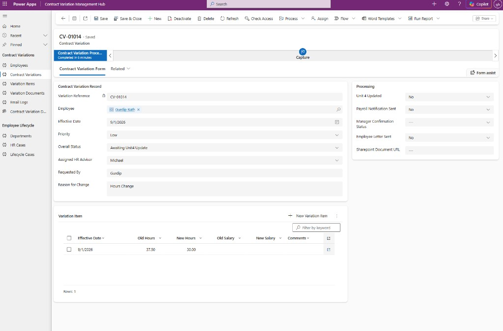

About
I work in HR Shared Services, where I see first-hand how manual and fragmented processes affect operational teams. That experience led me to Power Platform, where I build end-to-end solutions in my own Microsoft environment around real operational problems.
My projects cover the full solution lifecycle: requirements and process analysis, Dataverse architecture, model-driven and canvas apps, Power Automate, security, integrations, testing and ALM/deployment considerations. I’m now looking to bring that experience into a professional Power Platform role.
- Contract Variation Hub: End-to-end HR contract change management using Dataverse, a model-driven app, automated Outlook intake, validation and Power Automate orchestration.
- Employee Lifecycle Hub: 5-table Dataverse solution combining model-driven and canvas apps, Power Automate, role-based security and a C# plug-in.
- Contractor Hub: 13-table Dataverse architecture with business process flows, JavaScript web resources and custom security roles.
Currently: PL-900 certified · Open to Power Platform roles in the West Midlands / Birmingham (hybrid or remote UK). Active on LinkedIn (2,000+ followers).
TECHNICAL BREADTH
WHAT I CAN BUILD
Model-driven and canvas applications designed around operational business workflows.
Relational Dataverse solutions with validation, workflow automation, and document-driven processes.
Extending Power Platform with code and integrations where low-code alone is not enough.
From requirements and solution design through security, testing, and environment-aware deployment.
Projects
End-to-end Power Platform solutions designed around real operational problems, covering data modelling, application design, automation, security, and solution architecture.
-

Flagship Project
Contract Variation Hub
End-to-end HR contract change management solution — independently designed around a real operational HR process. Centralises fragmented Outlook, SharePoint, and spreadsheet intake in Dataverse; validates employees and variation data; creates structured Variation and Variation Item records; and orchestrates stakeholder communication through Power Automate.
-

Employee Lifecycle Hub
End-to-end employee lifecycle solution demonstrating broader Power Platform architecture — 5-table Dataverse model with model-driven and canvas apps, Power Automate, C# plugin, security model, Power BI, and ALM. Centralised case tracking, automated task creation, and stakeholder notifications.
-

Contractor Hub
13-table Dataverse architecture with relational modelling and junction tables — Business Process Flow, JavaScript web resources for on-form validation, and custom security roles.
AI & Copilot
Exploring how conversational AI and agents can extend business applications, automate support processes, and connect users with organisational data and workflows.
Technical Skills
Technologies I Use
Apps
- Model-Driven Apps
- Canvas Apps
- Power Fx
- Business Process Flows
Automation
- Power Automate
- Expressions
- OData
- Error Handling
Data
- Dataverse
- SharePoint
- Relational Modelling
- Business Rules
Development
- C#
- Dataverse SDK
- JavaScript
- REST APIs
AI
- Copilot Studio
- Agent Design
- Knowledge Grounding
Delivery
- Solutions
- Security Roles
- Column Security
- ALM
- Environment Variables
Reporting
- Power BI
Certifications

- Completed May 2026 Microsoft Certified: Power Platform Fundamentals (PL-900) Power Apps, Power Automate, and platform foundations.
Contact
Open to Power Platform developer and associate functional consultant roles. Based in Oldbury / West Midlands — happy with hybrid Birmingham or remote UK.
- Roles sought Power Platform Developer · Associate Functional Consultant
- Location West Midlands / Birmingham — hybrid or remote UK
- Availability Open to opportunities now
- Email bathgurdip1@gmail.com
- LinkedIn Gurdip Mikey Bath (2,000+ followers)
- Portfolio gurdip-bath.github.io
- GitHub github.com/gurdip-bath